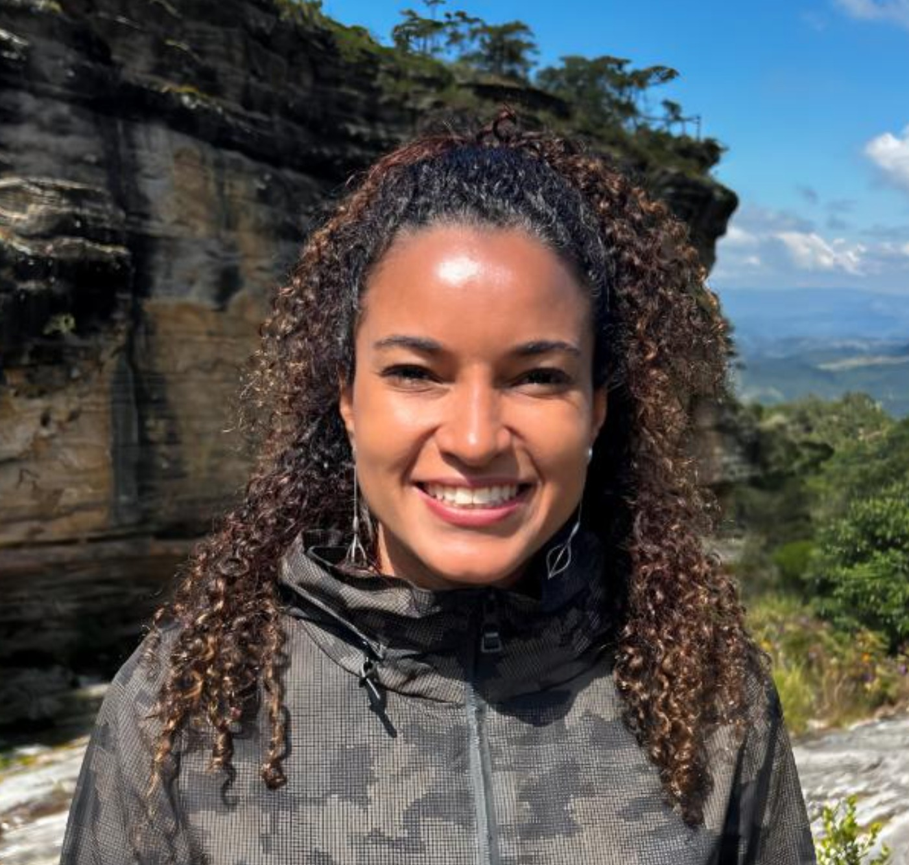

| Foto | Nome | Titulação |
|---|---|---|
|
 |
Joyce Miranda do Santos | Doutorado em Informática, Mestrado em Informática, especialiazação em Software para Web, Graduação em Sistemas de Informação, Graduação em tecnologia em Desenvolvimento de Software |
| Guidson Coelho de Andrade | Mestrado em Ciência da Computação, especealização Lideranção e Gestão Escolar, Graduação em licenciatura em Computação, Graduação em bacharelado Sistemas de informação | |
| Anderson Vallejo | Mestrado em Educação, especialização em Engearia de Sistemas de Computação, Graduação, Tecnólogo em processamento de dados | |
| Edilson da Silva | Mestre em Computação | |
| Daniel Ribeiro Pires | Mestrado em Computação, Gradução em Licenciatura em Informática, Graduação em Ciência da Computação |